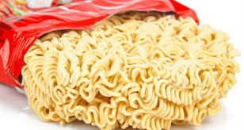

| Ingredientes |
Utensílios |
| Pacote de Miojo |
Panela |
| Água |
Como fazer
Abra o miojo, coloque dentro da panela, encha de água até cobrir o miojo,
coloque no fogão e ligue a boca embaixo da panela, espere até o macarrão do miojo
ficar mole e pronto.
Para Finalizar taque o veneno em pó que vem junto com macarrão.
Obs:Não ferver o tempero.